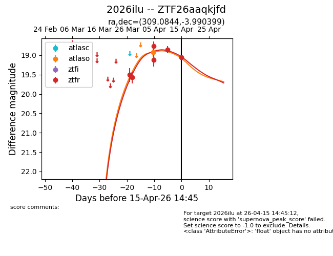
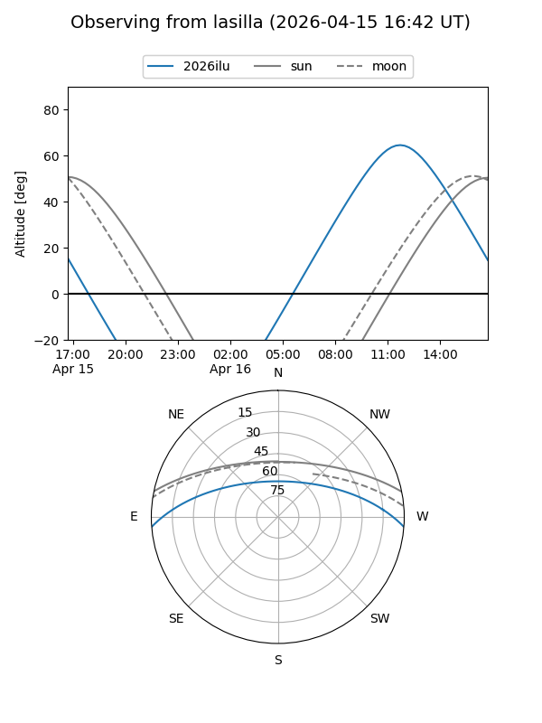
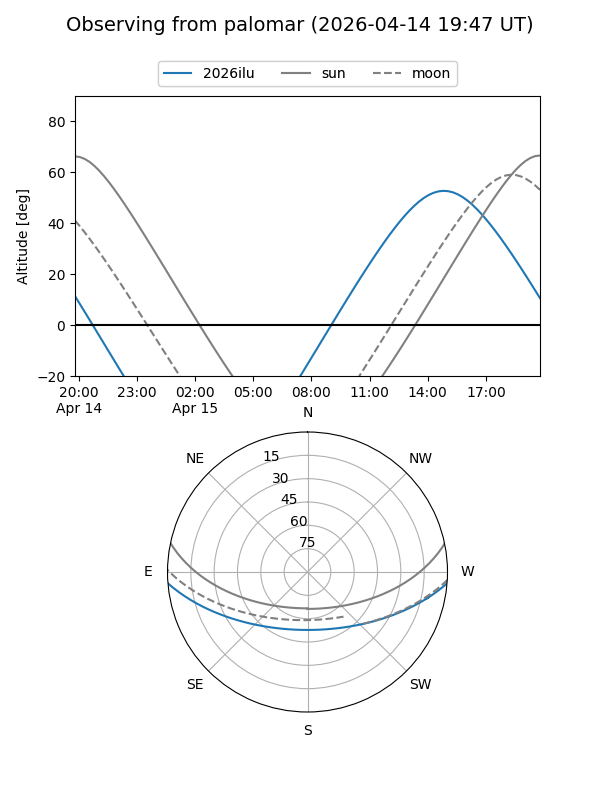
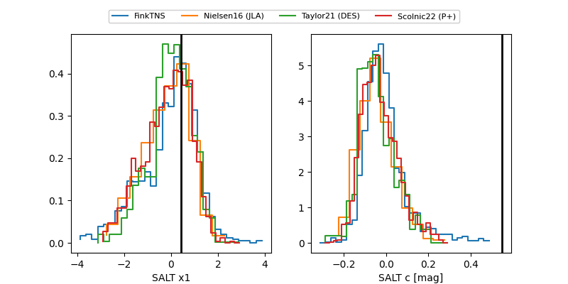

2026ilu
Target 2026ilu at 2026-04-15 14:55
Aliases and brokers:
FINK: link
Lasair: link
ALeRCE: link
TNS: link
YSE: link
alt names
ZTF26aaqkjfd (ztf,fink_ztf)
2026ilu (tns,yse)
Coordinates:
equatorial (ra, dec) = 309.0844,-3.99040
equatorial (HMS+DMS) = 20:36:20.25,-03:59:25.44
galactic (l, b) = (41.7656,-25.09118)
Flags:
Photometry:
last atlaso=18.92, ztfr=19.06
1 atlaso, 6 ztfr detections
Lightcurve

Visibility


Additional plots
